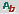
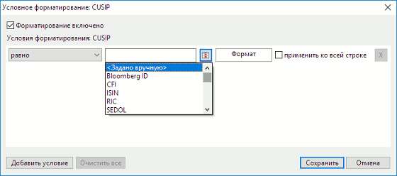
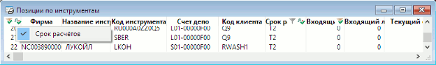

Условное форматирование таблиц
Параметры условного форматирования строк и ячеек можно настроить на каждый столбец таблицы для всех таблиц, кроме следующих:
- Таблица котировок;
- Таблица новостей;
- Карман транзакций;
- Таблица истории значений параметров;
- Таблица изменений параметров.
Для доступа к этой функции установите флажок на пункте «Использовать условное форматирование» в меню Система/Настройки/Основные настройки... раздел «Окна» / «Таблицы».
Для настройки форматирования строк и ячеек наведите указатель мыши на заголовок столбца и удерживайте, пока в области заголовка окна не появится значок , при нажатии на который открывается диалог для настройки формата строк и ячеек.

Диалог настроек условного форматирования содержит следующие параметры:
- Флажок «Форматирование включено» - при установленном флажке форматирование включено. При выключенном флажке форматирование отключено, а остальные параметры в диалоге недоступны.
-
«Условия форматирования» - описание условий аналогично описанию условий фильтра, приведенном в разделе «Пользовательские фильтры». Дополнительно доступны параметры:
- Если опция «применить ко всей строке» включена сразу для нескольких столбцов, то при выполнении условий для нескольких ячеек в одной строке одновременно:
- Строка отображается с настройками самого правого столбца, если заданы одни и те же настройки форматирования. Например, если в условии для двух столбцов одновременно задан цвет фона и указан признак «применить ко всей строке», то при выполнении условия для обоих столбцов строка будет нарисована цветом самого правого столбца.
- Cтрока отображается с использованием всех правил, заданных для столбцов, если в них заданы разные настройки форматирования. Например, если в условии для одного столбца задан только цвет фона, а для другого только цвет текста, и для обоих столбцов указан признак «применить ко всей строке», то при выполнении условия для обоих столбцов, строка отображается с использованием шрифта и цвета текста, указанного для второго столбца, и цветом фона, указанного для первого столбца.
- Собственные свойства форматирования столбца имеют больший приоритет, чем аналогичные свойства с включенной опцией «применить ко всей строке» для другого столбца. Например, если для одного столбца задан только цвет фона, а для другого заданы цвета фона и текста, и указан признак «применить ко всей строке», то первый столбец отобразится с цветом текста, указанным в условии столбца с признаком «применить ко всей строке», и с цветом фона из собственного условия.
- Цветовые настройки форматирования таблицы (задаются в диалоге редактирования таблицы) применяются к строкам и столбцам, если для них не настроены аналогичные свойства условного форматирования. Например, если для таблицы «Текущие торги» задана настройка для раскраски таблицы в полоску и для каких-то столбцов таблицы определены условия форматирования, задающие цвет фона, то при выполнении данных условий для каких-то ячеек они будут отображены цветом, заданным в условии, а не цветом, заданным для раскраски таблицы в полоску.
- Если для столбца настроены и выполнены несколько условий форматирования одновременно, то настройки применяются по следующему правилу:
- Настройки для строки берутся из последнего по порядку из всех выполненных условий c признаком «применить ко всей строке».
- Настройки для столбца берутся из последнего по порядку условия из всех выполненных условий без признака «применить ко всей строке». Если таких условий нет, настройки для столбца будут взяты из последнего по порядку условия, из всех выполненных для этого столбца.
Для удаления значения условия нажмите на кнопку рядом с ним.
- Кнопка «Добавить условие» - добавить условие форматирования.
Для снятия всех условий нажмите кнопку «Очистить все». При нажатии на кнопку «Сохранить» для столбца применяется форматирование с учетом указанных условий.
При заданных условиях значок в заголовке столбца принимает вид:
- – если форматирование включено;
- – если форматирование отключено.
Если хотя бы на одном из столбцов таблицы настроено условное форматирование, то в заголовке крайнего левого столбца таблицы отображается значок (или , если условное форматирование отключено на всех столбцах таблицы). При нажатии на значок появляется список наименований столбцов данной таблицы с настроенным условным форматированием. Если флажок в строке списка установлен, то на данном столбце задано условное форматирование, если флажок снят – условное форматирование на соответствующем столбце отключено. При нажатии на строке списка открывается диалог редактирования условного форматирования.

Изменение состояния настроек условного форматирования по всем столбцам выбранной таблицы возможно через меню Действия/Форматирование выбором одной из команд (либо с помощью «горячих клавиш»):
- «Отключить все» («Ctrl»+«Shift»+«R»),
- «Включить все» («Ctrl»+«R»),
- «Очистить все» («Alt»+«R»).
Настройки правил условного форматирования сохраняются в файле настроек и загружаются из него.